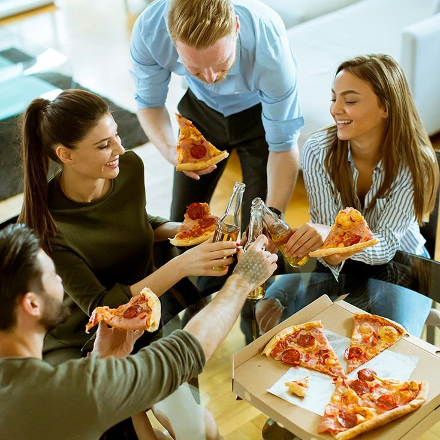
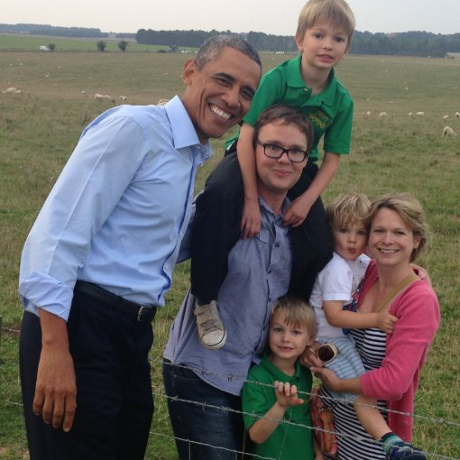

Pizza party
One of the best ways to celebrate reeaching the reward threshold is a big pizza party.
Using our own freshly grown tomatoes to create the tomato sauce, milking our very
own cows to obtain the cheese, and farming our own wheat to grind the flour, Green Bob
makes a pizza nobody could possibly resist. Every bite fills the members with more passion
to keep working hard on their green tasks, making this reward is a great motivator.

Inviting Former US President Barack Obama
Green Bob is a well connected man, and one time, he was able to secure a visit by the former
American President, Barack Obama. Mr. Obama was very impressed with our community and our
goals, and he congratulated our members for completeing the reward threshold. He was
particularly charmed by our avocado trees, and our members were happy to offer him an avocado
toast straight from the tree. The members enjoyed singing songs and playing board games with
Mr. Obama, and this was a very exciting and proud day for Cloverville.
Planting trees in Cloverville
Trees are amazing! Here in Cloverville, we love trees so much, we decided to plant a bunch of
them in our garden. Green bob was able to find great mango, apple, and pear trees for the
members to plant. Quite a few of us are vegan, so more fruit options are a great addition
to the community. In all, we were able to plant roughly 60 to 70 trees of many varieties.
This was a great reward for the members, who worked dilligently to earn the community points.